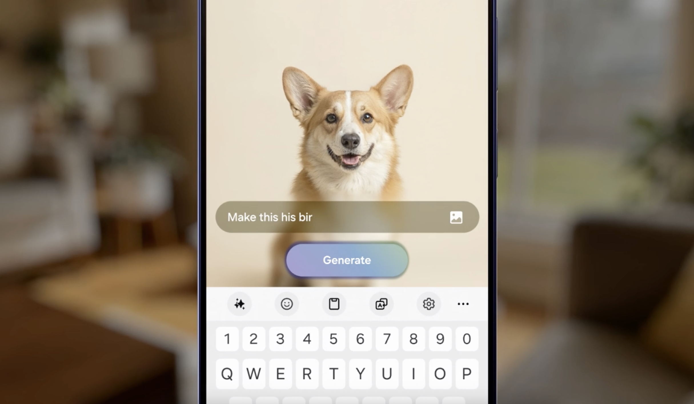

Translated generative AI into photo-editing interactions using language, sketch, and context. Established a fast iteration loop that keeps users in control through conversational refinement.
Role: Interaction model, prototyping, design systems · Impact: Unpacked 2024